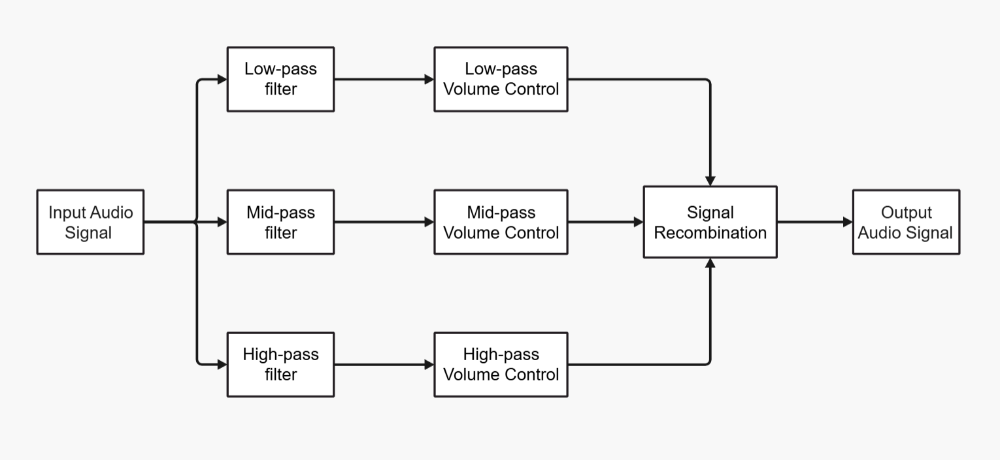
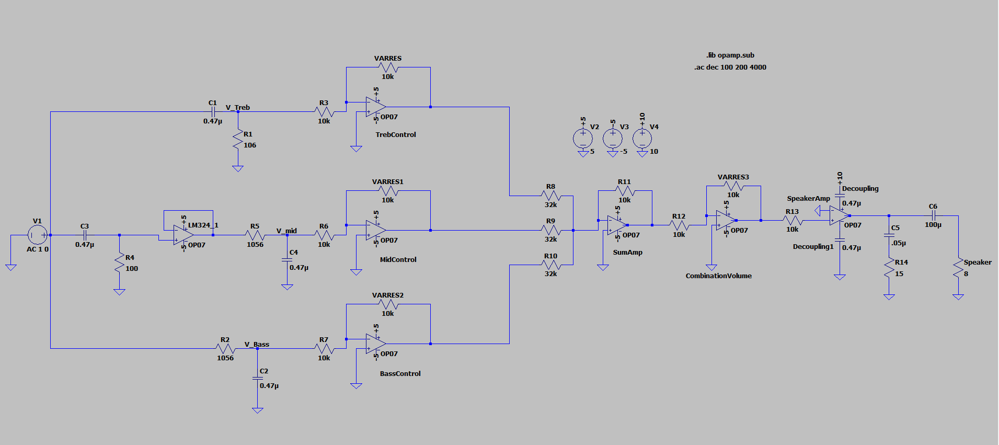

Audio Equalizer
The Audio Equalizer project focused on the design and implementation of analog filters and amplifiers to perform audio signal processing. The primary engineering objective was to create a system capable of manipulating audio frequencies by utilizing active bandpass filters to isolate specific ranges, alongside non-verting operational amplifiers to boost signal strength. The implementation involved precise circuit analysis, utilizing a range of components to ensure the system met required specifications for clarity and frequency response. By integrating these analog stages, the project demonstrated a practical application of linear circuit theory to real-world audio equipment, resulting in a functional device that can effectively attenuate or amplify different parts of the audible spectrum.
Functional Block Diagram

Circuit Diagram
